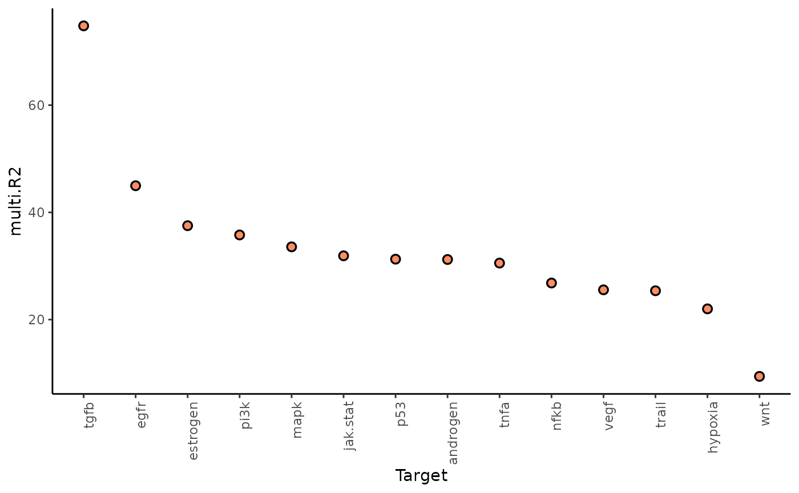
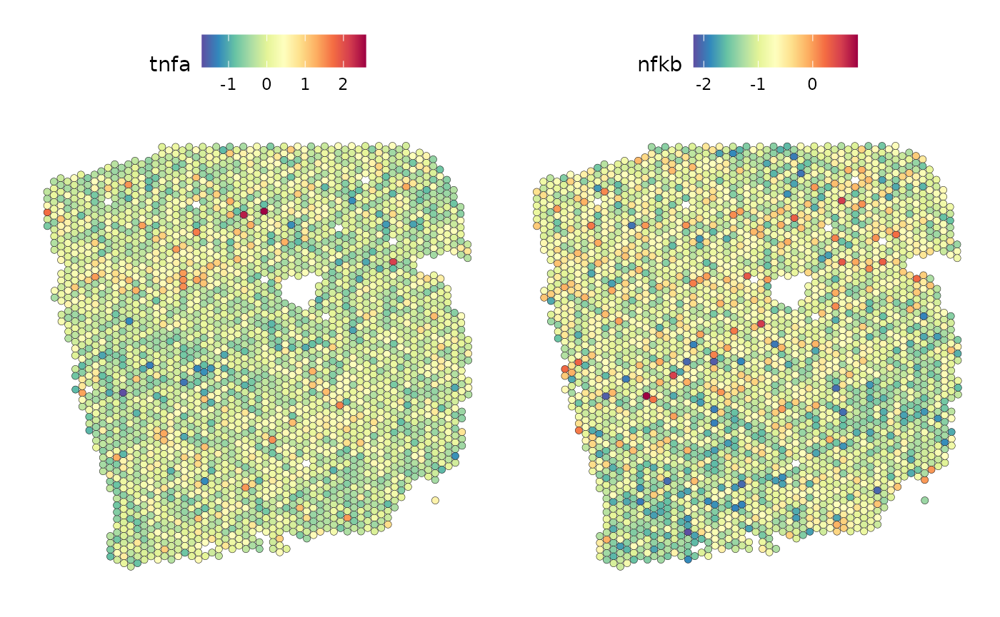

Functional analysis with MISTy - pathway activity and ligand expression
Leoni Zimmermann
Heidelberg University, Heidelberg, GermanyJovan Tanevski
Heidelberg University and Heidelberg University Hospital, Heidelberg, GermanyJožef Stefan Institute, Ljubljana, Slovenia
jovan.tanevski@uni-heidelberg.de
2024-03-04
Source:vignettes/FunctionalPipelinePathwayActivityLigands.Rmd
FunctionalPipelinePathwayActivityLigands.RmdIntroduction
10X Visium captures spatially resolved transcriptomic profiles in spots containing multiple cells. In this vignette, we will use the gene expression information from Visium data to infer pathway activity and investigate spatial relationships between some pathways and ligand expression.
Load the necessary packages:
Get and load data
For this showcase, we use a 10X Visium spatial slide from Kuppe et al., 2022, where they created a spatial multi-omic map of human myocardial infarction. The tissue example data comes from the human heart of patient 14, which is in a later state after myocardial infarction. The Seurat object contains, among other things, the normalized and raw gene counts. First, we have to download and extract the file:
download.file("https://zenodo.org/records/6580069/files/10X_Visium_ACH005.tar.gz?download=1",
destfile = "10X_Visium_ACH005.tar.gz", method = "curl")
untar("10X_Visium_ACH005.tar.gz")The next step is to load the data, extract the normalized gene counts, names of genes expressed in at least 5% of the spots, and pixel coordinates. It is recommended to use pixel coordinates instead of row and column numbers since the rows are shifted and therefore do not express the real distance between the spots.
seurat_vs <- readRDS("ACH005/ACH005.rds")
expression <- as.matrix(GetAssayData(seurat_vs, layer = "counts", assay = "SCT"))
gene_names <- rownames(expression[(rowSums(expression > 0) / ncol(expression)) >= 0.05,])
geometry <- GetTissueCoordinates(seurat_vs, scale = NULL)Pathway activity
Now we create a Seurat object with pathway activities inferred from
PROGENy.
We delete the PROGENy assay done by Kuppe et al. and load a model matrix
with the top 1000 significant genes for each of the 15 available
pathways. We then extract the genes that are both common to the PROGENy
model and the snRNA-seq assay from the Seurat object. We compute the
weighted sum of both and scale them to infer the pathway activity. We
save the result in a Seurat assay and clean the row names to handle
problematic variables.
seurat_vs[['progeny']] <- NULL
# Matrix with important genes for each pathway
model <- get_progeny(organism = "human", top = 1000)
# Use multivariate linear model to estimate activity
est_path_act <- run_mlm(expression, model,.mor = NULL)
# Put estimated pathway activities object into the correct format
est_path_act_wide <- est_path_act %>%
pivot_wider(id_cols = condition, names_from = source, values_from = score) %>%
column_to_rownames("condition")
# Clean names
colnames(est_path_act_wide) <- est_path_act_wide %>%
clean_names(parsing_option = 0) %>%
colnames(.)
# Create a Seurat object
seurat_vs[['progeny']] <- CreateAssayObject(counts = t(est_path_act_wide))
# Format for running MISTy later
pathway_activity <- t(as.matrix(GetAssayData(seurat_vs, "progeny")))Ligands
To annotate the expressed ligands found in the tissue slide, we import an intercellular network of ligands and receptors from Omnipath. We extract the ligands that are expressed in the tissue slide and get their count data. We again clean the row names to handle problematic variables.
# Get ligands
lig_rec <- import_intercell_network(interactions_param = list(datasets = c('ligrecextra', 'omnipath', 'pathwayextra')),
transmitter_param = list(parent = 'ligand'),
receiver_param = list(parent = 'receptor'))
# Get unique ligands
ligands <- unique(lig_rec$source_genesymbol)
# Get expression of ligands in slide
slide_markers <- ligands[ligands %in% gene_names]
ligand_expr <- t(as.matrix(expression[slide_markers,])) %>% clean_names()
#clean names
rownames(seurat_vs@assays$SCT@data) <- seurat_vs@assays$SCT@data %>% clean_names(parsing_option = 0) %>% rownames(.)Visualize pathway activity
Before continuing with creating the MISTy view, we can look at the slide itself and some of the pathway activities.
#Slide
SpatialPlot(seurat_vs, alpha = 0)
# Pathway activity examples
DefaultAssay(seurat_vs) <- "progeny"
SpatialFeaturePlot(seurat_vs, feature = c("mapk", "p53"), keep.scale = NULL)MISTy views
Now we need to create the MISTy views of interest. We are interested in the relationship of the pathway activity in the same spot (intraview) and the ten closest spots (paraview). Therefore we choose the family `constant` and set l to ten, which will select the ten nearest neighbors. Depending on the goal of the analysis, different families can be applied.
We are also intrigued about the relationship of ligand expression and pathway activity in the broader tissue. For this, we again create an intra- and paraview, this time for the expression of the ligands, but from this view, we only need the paraview. In the next step, we add it to the pathway activity views to achieve our intended view composition.
pathway_act_view <- create_initial_view(as_tibble(pathway_activity) ) %>%
add_paraview(geometry, l = 10, family = "constant")##
## Generating paraview using 10 nearest neighbors per unit
ligand_view <- create_initial_view(as_tibble(ligand_expr) %>% clean_names()) %>%
add_paraview(geometry, l = 10, family = "constant")##
## Generating paraview using 10 nearest neighbors per unit
combined_views <- pathway_act_view %>% add_views(create_view("paraview.ligand.10", ligand_view[["paraview.10"]]$data, "para.ligand.10"))Then run MISTy and collect the results:
run_misty(combined_views, "result/functional_ligand")## [1] "/home/runner/work/mistyR/mistyR/vignettes/result/functional_ligand"
misty_results <- collect_results("result/functional_ligand/")Downstream analysis
With the collected results, we can now answer the following questions:
1. To what extent can the analyzed surrounding tissues’ activities explain the pathway activity of the spot compared to the intraview?
Here we can look at two different statistics: multi.R2 shows the total variance explained by the multiview model. gain.R2 shows the increase in explainable variance from the paraview.
misty_results %>%
plot_improvement_stats("gain.R2") %>%
plot_improvement_stats("multi.R2")## Warning: Removed 14 rows containing missing values or values outside the scale range
## (`geom_segment()`).
## Warning: Removed 14 rows containing missing values or values outside the scale range
## (`geom_segment()`).The paraview particularly increases the explained variance for TGFb and PI3K. In general, the significant gain in R2 can be interpreted as the following:
“We can better explain the expression of marker X when we consider additional views other than the intrinsic view.”
To see the individual contributions of the views we can use:
misty_results %>% plot_view_contributions()2. What are the specific relations that can explain the pathway activity
The importance of the markers from each viewpoint as predictors of the spot intrinsic pathway activity can be shown individually to explain the contributions.
First, for the intrinsic view. To set an importance threshold we
apply cutoff:
misty_results %>%
plot_interaction_heatmap("intra", clean = TRUE, cutoff = 1.5)We can observe that TNFa is a significant predictor for the activity of the NFkB pathway when in the same spot. Let’s take a look at the spatial distribution of these pathway activities in the tissue slide:
SpatialFeaturePlot(seurat_vs, features = c("tnfa", "nfkb"), image.alpha = 0)
We can observe a correlation between high TNFa activity and high NFkB activity.
Now we repeat this analysis with the pathway activity paraview. With
trim we display only targets with a value above 0.5 for
gain.R2.
misty_results %>%
plot_interaction_heatmap(view = "para.10",
clean = TRUE,
trim = 0.5,
trim.measure = "gain.R2",
cutoff = 1.25)From the gain.R2 we know that the paraview contributes a
lot to explaining the TGFb pathway activity. Let’s visualize it and its
most important predictor, androgen pathway activity:
SpatialFeaturePlot(seurat_vs, features = c("androgen", "tgfb"), image.alpha = 0)The plots show us an anticorrelation of these pathways.
Now we will analyze the last view, the ligand expression paraview:
misty_results %>%
plot_interaction_heatmap(view = "para.ligand.10", clean = TRUE, trim = 0.5,
trim.measure = "gain.R2", cutoff=3)The ligand SERPINF1 is a predictor of both PI3K and VEGF:
SpatialFeaturePlot(seurat_vs, features = c("pi3k"), image.alpha = 0)
SpatialFeaturePlot(seurat_vs, features = c("vegf"), image.alpha = 0)
DefaultAssay(seurat_vs) <- "SCT"
SpatialFeaturePlot(seurat_vs, features = c("serpinf1"), image.alpha = 0)From the slides we can see that SERPINF1 correlates positive with PI3K and negative with VEGF
Session Info
Here is the output of sessionInfo() at the point when
this document was compiled.
## R version 4.3.3 (2024-02-29)
## Platform: x86_64-pc-linux-gnu (64-bit)
## Running under: Ubuntu 22.04.4 LTS
##
## Matrix products: default
## BLAS: /usr/lib/x86_64-linux-gnu/openblas-pthread/libblas.so.3
## LAPACK: /usr/lib/x86_64-linux-gnu/openblas-pthread/libopenblasp-r0.3.20.so; LAPACK version 3.10.0
##
## locale:
## [1] LC_CTYPE=C.UTF-8 LC_NUMERIC=C LC_TIME=C.UTF-8
## [4] LC_COLLATE=C.UTF-8 LC_MONETARY=C.UTF-8 LC_MESSAGES=C.UTF-8
## [7] LC_PAPER=C.UTF-8 LC_NAME=C LC_ADDRESS=C
## [10] LC_TELEPHONE=C LC_MEASUREMENT=C.UTF-8 LC_IDENTIFICATION=C
##
## time zone: UTC
## tzcode source: system (glibc)
##
## attached base packages:
## [1] stats graphics grDevices utils datasets methods base
##
## other attached packages:
## [1] distances_0.1.10 janitor_2.2.0 progeny_1.24.0 OmnipathR_3.10.1
## [5] decoupleR_2.8.0 lubridate_1.9.3 forcats_1.0.0 stringr_1.5.1
## [9] dplyr_1.1.4 purrr_1.0.2 readr_2.1.5 tidyr_1.3.1
## [13] tibble_3.2.1 ggplot2_3.5.0 tidyverse_2.0.0 Seurat_5.0.2
## [17] SeuratObject_5.0.1 sp_2.1-3 future_1.33.1 mistyR_1.10.0
## [21] BiocStyle_2.30.0
##
## loaded via a namespace (and not attached):
## [1] RcppAnnoy_0.0.22 splines_4.3.3 later_1.3.2
## [4] filelock_1.0.3 R.oo_1.26.0 cellranger_1.1.0
## [7] polyclip_1.10-6 hardhat_1.3.1 pROC_1.18.5
## [10] rpart_4.1.23 fastDummies_1.7.3 lifecycle_1.0.4
## [13] globals_0.16.2 lattice_0.22-5 vroom_1.6.5
## [16] MASS_7.3-60.0.1 backports_1.4.1 magrittr_2.0.3
## [19] plotly_4.10.4 sass_0.4.8 rmarkdown_2.25
## [22] jquerylib_0.1.4 yaml_2.3.8 rlist_0.4.6.2
## [25] httpuv_1.6.14 sctransform_0.4.1 spam_2.10-0
## [28] spatstat.sparse_3.0-3 reticulate_1.35.0 cowplot_1.1.3
## [31] pbapply_1.7-2 RColorBrewer_1.1-3 abind_1.4-5
## [34] rvest_1.0.4 Rtsne_0.17 R.utils_2.12.3
## [37] nnet_7.3-19 rappdirs_0.3.3 ipred_0.9-14
## [40] lava_1.7.3 ggrepel_0.9.5 irlba_2.3.5.1
## [43] listenv_0.9.1 spatstat.utils_3.0-4 goftest_1.2-3
## [46] RSpectra_0.16-1 spatstat.random_3.2-3 fitdistrplus_1.1-11
## [49] parallelly_1.37.1 pkgdown_2.0.7 leiden_0.4.3.1
## [52] codetools_0.2-19 xml2_1.3.6 tidyselect_1.2.0
## [55] farver_2.1.1 stats4_4.3.3 matrixStats_1.2.0
## [58] spatstat.explore_3.2-6 jsonlite_1.8.8 caret_6.0-94
## [61] ellipsis_0.3.2 progressr_0.14.0 iterators_1.0.14
## [64] ggridges_0.5.6 survival_3.5-8 systemfonts_1.0.5
## [67] foreach_1.5.2 tools_4.3.3 progress_1.2.3
## [70] ragg_1.2.7 ica_1.0-3 Rcpp_1.0.12
## [73] glue_1.7.0 prodlim_2023.08.28 gridExtra_2.3
## [76] ranger_0.16.0 xfun_0.42 withr_3.0.0
## [79] BiocManager_1.30.22 fastmap_1.1.1 fansi_1.0.6
## [82] digest_0.6.34 timechange_0.3.0 R6_2.5.1
## [85] mime_0.12 textshaping_0.3.7 colorspace_2.1-0
## [88] scattermore_1.2 tensor_1.5 spatstat.data_3.0-4
## [91] R.methodsS3_1.8.2 utf8_1.2.4 generics_0.1.3
## [94] recipes_1.0.10 data.table_1.15.2 class_7.3-22
## [97] ridge_3.3 prettyunits_1.2.0 httr_1.4.7
## [100] htmlwidgets_1.6.4 ModelMetrics_1.2.2.2 uwot_0.1.16
## [103] pkgconfig_2.0.3 gtable_0.3.4 timeDate_4032.109
## [106] lmtest_0.9-40 selectr_0.4-2 furrr_0.3.1
## [109] htmltools_0.5.7 dotCall64_1.1-1 bookdown_0.38
## [112] scales_1.3.0 png_0.1-8 gower_1.0.1
## [115] snakecase_0.11.1 knitr_1.45 tzdb_0.4.0
## [118] reshape2_1.4.4 checkmate_2.3.1 nlme_3.1-164
## [121] curl_5.2.1 cachem_1.0.8 zoo_1.8-12
## [124] KernSmooth_2.23-22 parallel_4.3.3 miniUI_0.1.1.1
## [127] desc_1.4.3 pillar_1.9.0 grid_4.3.3
## [130] logger_0.2.2 vctrs_0.6.5 RANN_2.6.1
## [133] promises_1.2.1 xtable_1.8-4 cluster_2.1.6
## [136] evaluate_0.23 cli_3.6.2 compiler_4.3.3
## [139] rlang_1.1.3 crayon_1.5.2 future.apply_1.11.1
## [142] labeling_0.4.3 plyr_1.8.9 fs_1.6.3
## [145] stringi_1.8.3 viridisLite_0.4.2 deldir_2.0-4
## [148] assertthat_0.2.1 munsell_0.5.0 lazyeval_0.2.2
## [151] spatstat.geom_3.2-9 Matrix_1.6-5 RcppHNSW_0.6.0
## [154] hms_1.1.3 patchwork_1.2.0 bit64_4.0.5
## [157] shiny_1.8.0 highr_0.10 ROCR_1.0-11
## [160] igraph_2.0.2 memoise_2.0.1 bslib_0.6.1
## [163] bit_4.0.5 readxl_1.4.3